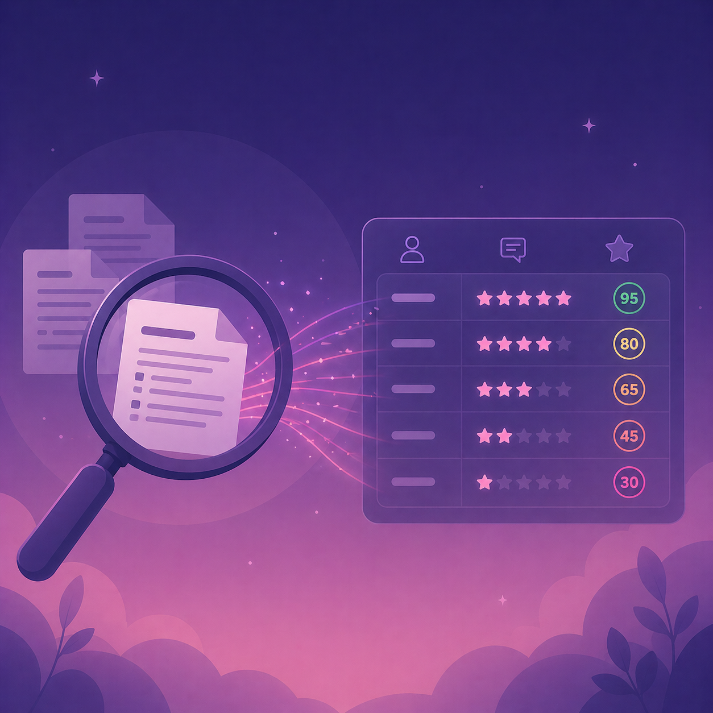

Evaluaciones + automatización documental
Lector inteligente de PDFs
Este proyecto está pensado para facilitar la revisión de evaluaciones de capacitación cuando la información llega en formularios físicos o PDFs. La idea es leer esos documentos, transcribir su contenido y dejar las respuestas listas para analizarlas con mayor rapidez y menos trabajo manual.
Caso reenfocado para mostrar utilidad práctica en revisión y análisis de evaluaciones.

La ilustración resume el objetivo del sistema: leer evaluaciones, transcribir respuestas y convertirlas en una revisión más clara, rápida y útil.
Problema de negocio
Cuando una capacitación se evalúa con formularios físicos o PDFs, revisar respuesta por respuesta toma tiempo y dificulta obtener una lectura general de los resultados con rapidez.
Qué tipo de contenido aborda
Comentarios abiertos, valoraciones y respuestas de participantes que normalmente quedan repartidas en documentos difíciles de consolidar.
Solución planteada
Una solución que lee documentos, transcribe el contenido y organiza las respuestas para que queden listas para revisión y análisis.
Valor esperado
El valor está en reducir revisión manual, acelerar la lectura de resultados y facilitar una evaluación más clara del impacto de la capacitación.
Qué problema resuelve
Permite pasar de formularios difíciles de revisar a una salida donde las respuestas se pueden consultar, comparar y analizar de forma mucho más simple.
Por qué importa
Cuando la evaluación se hace manualmente, se pierde tiempo operativo y se vuelve más difícil detectar patrones, comentarios repetidos o una señal clara sobre el resultado real de la capacitación.
Qué se analizó
- Respuestas abiertas contenidas en formularios físicos o PDFs.
- Valoraciones y comentarios que ayudan a entender la experiencia del participante.
- Formas de ordenar la información para facilitar revisión y análisis posterior.
Lectura analítica
El foco está en transformar respuestas dispersas en una lectura más útil: qué tan bien fue recibida la capacitación, dónde hay señales positivas y dónde conviene profundizar con más atención.
Qué flujo se propone
- Leer documentos y recuperar las respuestas contenidas en cada evaluación.
- Transcribir el contenido para dejarlo en un formato más claro y ordenado.
- Agrupar resultados en una base simple de revisar y exportar.
- Generar una señal rápida para resumir impacto, percepción o resultado general.
- Facilitar análisis posterior sin depender de lectura completamente manual.
Cómo se aplica en negocio
Puede ayudar a áreas de capacitación, RR.HH. o gestión interna que necesiten revisar muchas evaluaciones, resumir resultados y detectar con más rapidez cómo fue recibida una actividad formativa.
Entregables esperados
Score de impacto
Lectura de formularios
Respuestas organizadas
Menos trabajo manual
Análisis más simple
Revisión más rápida
Tecnologías utilizadas
Python
OCR
Pandas
PDF Processing
Streamlit
Text Cleaning
Document Parsing
Data Export
NLP
Otro caso aplicado
Si quieres ver un proyecto donde el foco está en clasificación clínica y presentación MLOps, revisa el modelo predictivo de tumores mamarios.
Ver caso de fraudeVolver al portafolio
Explora el resto de categorías para revisar casos orientados a riesgo, dashboards y capas operativas.
Volver a proyectos